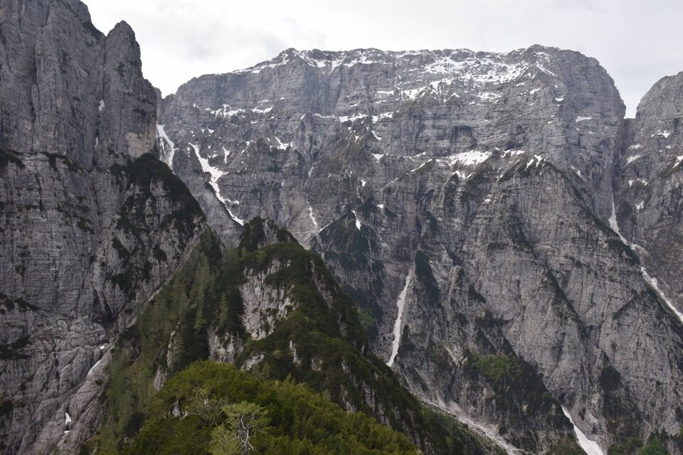
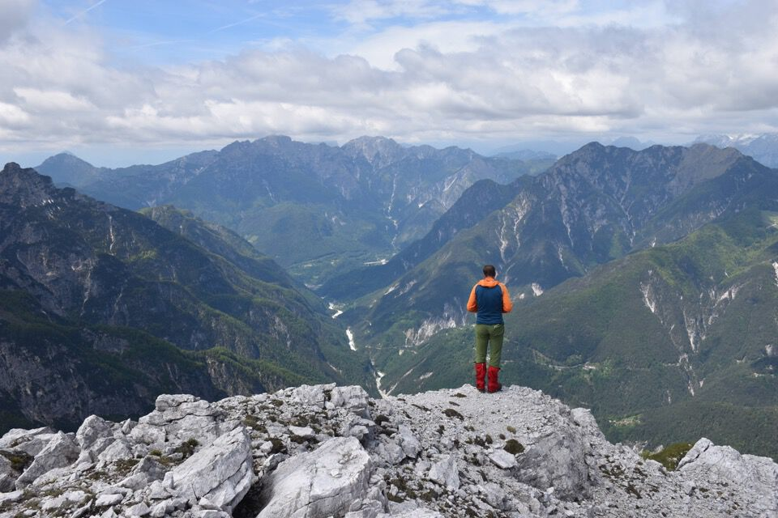
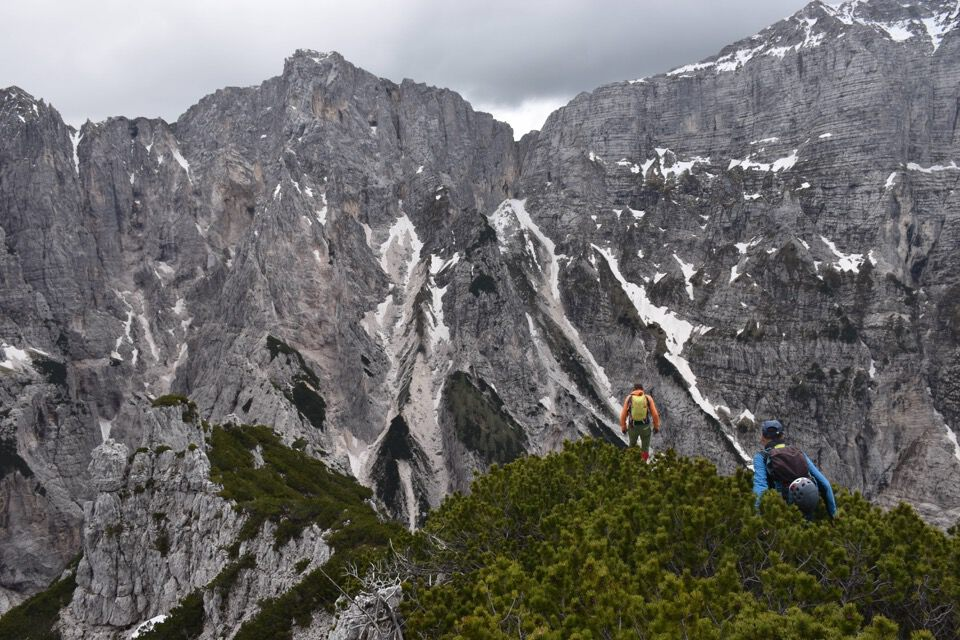

Traversata dello Jôf di Miéz: riscoperta della via dei cacciatori, dalla Sella del Clap Blanc.
«La posizione isolata ne fa uno straordinario belvedere, dal quale si rivelano i recessi più nascosti delle Clapadòrie e del Rio Saline. Purtroppo la vista è tanto interessante quanto impegnativa è la salita, la cui difficoltà non è messa nel giusto rilievo dalle relazioni pubblicate (Krammer e Dougan). Un percorso più agevole, ma non privo di passaggi pericolosi su terreno friabile, viene praticato dai cacciatori partendo dalla sella del Clap Blanc e seguendo le cenge, a tratti strette ed esposte, sul versante del Rio Saline.»Queste parole, scritte da Mario Galli nella preziosissima guida «Alpi Giulie Occidentali», sono state come una folgorazione per me; l'aver letto poi di un misterioso escursionista che decenni fa percorse questa via mi ha spinto a tornare in zona con grande entusiasmo appena una settimana dopo aver salito il Clap Blanc con Kelen e Luciana. Itinerario concepito, studiato e realizzato nell'arco di una settimana: mica male!
La via è fantastica, a nostro giudizio più bella e più semplice della terrificante cengia alta di discesa al Livinal Lunc (via Kugy 1898; via normale?) che abbiamo percorso in discesa. Dalla Sella del Clap Blanc in poi sono spariti i tagli, nessuna traccia umana, ma poco importa perché la cengia è sempre ben battuta dagli zoccoli dei camosci. Un solo passaggio, presso un breve franamento di pochi metri molto esposto, ci ha consigliato di assicurarci con una manovra di corda.
Val Dogna mon amour.
La giornata promette bene.

In quattro e quattr'otto, conoscendo già il percorso, siamo già sotto il Clap Blanc.
Facciamo un salto in cima.
Osserviamo con preoccupazione l'arcigna cresta piena di mughi che dobbiamo percorrere. Si preannuncia una lotta infernale?
Con grande sorpresa la cosa si rivela ben più semplice del previsto, passando sul lato est della cresta per buona traccia di camosci con vecchi tagli.

E ora su verso la parete gialla, i tagli sono finiti ma poco importa perché basta seguire le tracce dei selvatici.
A dx il Clap Blanc dove eravamo poco fa.

Finalmente sotto la parete gialla. Il luogo è magnifico.
Per prendere la cengia bisogna montare in cima allo spallone: io vado per la bellissima e stretta cengia addossata alla parete, Tomaso e Massimo scendono e poi salgono per il canale.
Ecco l'inizio vero e proprio della cengia sud-ovest: la prima metà è un po' più stretta e delicata.
Comunque superato lo spallone inizia una evidente (ed invitante) rampa rocciosa verso sx, che dovrebbe portare fin sulla cresta nord-ovest del monte. La cosa non ci era sfuggita studiando le foto a distanza, ma non è chiaro se si riesca a superare una fascia rocciosa a metà della rampa.
Si riuscirà a passare o no?
E certo che si passa!
Bando alle ciance, iniziamo a percorrere la cengia sud-ovest. Subito con qualche passaggio non difficile.
La cengia è bellissima.
Il malpasso: dalla foto sembra una stupidata ma non lo è, ed è bene legarsi. Sono pochi metri e ci sono mughi alle estremità.
L'imponente parete ovest del Montasio.

In cima: realizzare questa salita è stata una grandissima soddisfazione.
1600 metri di parete! Inutile dire che questo è il più magnifico belvedere sul Montasio.
Là sotto il Clap Blanc da dove siamo partiti diverse ore prima.
Iniziamo a scendere.
Curtissons nord: terrificante.
Seguendo la relazione del Norman andiamo in cerca della cengia alta.
La cengia è tremenda: terreno pessimo e grande esposizione.
La strettoia: mi si è gelato il sangue a vederla. Io su questa cengia non ci metto più piede...
M'immagino qui la «giovane maestrina di Dogna» quando nel '29 Brunner ci salì con Dougan e Comici (!) assieme a due signorine (AG 58).
La testata del Livinal Lunc, chiuso dai Curtissons, ambiente dantesco.
E ora giù per il Livinal Lunc e il rio Saline: interminabile.
Dal rio Saline osserviamo il versante ovest dello Jôf di Miéz tagliato dalla cengia; in alto a sx la parete gialla sotto cui siamo passati.
***
La cengia nella sua parte inferiore è in certi punti molto stretta con roccia friabilissima, in seguito però è comoda e sicura, in alto larga, e tutta coperta di pini mughi. Per questa cengia si raggiunse la cresta nord-ovest della montagna e portandoci sul versante della Clapadorie si raggiunse facilmente la cima. (2 ore di salita).
Touristicamente questa non venne ancora salita; però cacciatori di camosci l'avevano diggià raggiunta, e noi vi trovammo l'ometto eretto dal padre della guida Cappellari, che raggiunse la cima salendo dalla Clapadorie.
Questa, in grazia della sua posizione centrica in faccia all'Jôf, offre una vista così grandiosa ed istruttiva, che chi realmente volesse conoscere i segreti del Montasio dovrebbe portarsi su essa, e sono certo che ne discenderebbe entusiasta. Quello che per il Monte Canino è il Bila Pec, per il Montasio è l'Jôf di Miez.»